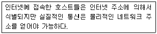
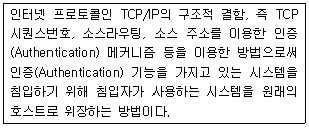
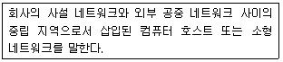

인터넷보안전문가-2급 (2009-09-27 기출문제)
1과목: 정보보호개론
1. 악성 프로그램에 대한 설명으로 옳지 않은 것은?
- 트랩도어 프로그램은 정당한 인증 과정 없이 시스템에 대한 액세스 권한을 획득하게 하는 프로그램이다.
- 논리 폭탄은 일정한 조건이 만족되면 자료나 소프트웨어를 파괴하는 프로그램이 삽입된 코드이다.
- 트로이 목마 프로그램은 피상적으로 유용한 프로그램으로 보이나, 이것이 실행되었을 경우 원하지 않거나 해로운 기능을 수행하는 코드가 숨어 있는 프로그램이다.
- 바이러스는 악성 프로그램의 일종으로써, 다른 프로그램을 변경하며, 전염성은 없으나 감염된 시스템을 파괴할 수 있다.
(정답률: 알수없음)

2. IPSec 프로토콜에 대한 설명으로 옳지 않은 것은?
- 네트워크 계층인 IP 계층에서 보안 서비스를 제공하기 위한 보안 프로토콜이다.
- 기밀성 기능은 AH(Authentication Header)에 의하여 제공되고, 인증 서비스는 ESP(Encapsulating Security Payload) 에 의하여 제공된다.
- 보안 연계(Security Association)는 사용된 인증 및 암호 알고리즘, 사용된 암호키, 알고리즘의 동작 모드, 그리고 키의 생명 주기 등을 포함한다.
- 키 관리는 수동으로 키를 입력하는 수동방법과 IKE 프로토콜을 이용한 자동방법이 존재한다.
(정답률: 알수없음)
3. 네트워크 보안과 가장 관계가 없는 것은?
- 리피터
- 방화벽
- 개인키
- 공개키
(정답률: 알수없음)
4. 인터넷상에서 시스템 보안 문제는 중요한 부분이다. 보안이 필요한 네트워크 통로를 단일화하여 이 출구를 보안 관리함으로써 외부로부터의 불법적인 접근을 막는 시스템은?
- 해킹
- 펌웨어
- 크래킹
- 방화벽
(정답률: 알수없음)
5. 전자 상거래의 보안이 중요시되고 있는 현시점에서 은행 머천트, 카드 사용자에게 안전한 상거래를 할 수 있도록 보장해 주는 보안 프로토콜은?
- SSL
- SET
- PEM
- PGP
(정답률: 알수없음)
6. DES 암호화 기술 기법에 대한 설명으로 옳지 않은 것은?
- 송ㆍ수신자 모두 다른 키를 갖는다.
- 스마트카드 등에 이용한다.
- 암호화가 빠르다.
- 키 관리와 분배의 어려움이 있다.
(정답률: 알수없음)
7. 암호화의 목적은?
- 정보의 보안 유지
- 정보의 전송
- 정보의 교류
- 정보의 전달
(정답률: 알수없음)
8. Deadlock(교착상태) 에 관한 설명으로 가장 올바른 것은?
- 여러 개의 프로세스가 자원의 사용을 위해 경쟁한다.
- 이미 다른 프로세스가 사용하고 있는 자원을 사용하려 한다.
- 두 프로세스가 순서대로 자원을 사용한다.
- 두개 이상의 프로세스가 서로 상대방이 사용하고 있는 자원을 기다린다.
(정답률: 알수없음)
9. 다음 중 정보보호 관련 법령에 위반 되어 법적 제제를 받을 수 있는 것은?
- 웹 서비스를 통한 회원 등록시 회원 관리를 위한 회원 동의를 거친 개인 정보 기록
- 불필요한 전자 메시지류의 전자 우편 수신 거부
- 웹 서비스 업체에 회원 등록시 불성실한 개인 정보 등록
- 동의를 받지 않은 친구의 신용카드를 이용하여 전자 상거래에서 전자 결재
(정답률: 알수없음)
10. 다음 중 불법적인 공격에 대한 데이터에 대한 보안을 유지하기 위해 요구되는 기본적인 보안 서비스로 옳지 않은 것은?
- 기밀성(Confidentiality)
- 무결성(Integrity)
- 부인봉쇄(Non-Repudiation)
- 은폐성(Concealment)
(정답률: 알수없음)
2과목: 운영체제
11. 아파치 데몬으로 웹서버를 운영하고자 할 때 반드시 선택해야하는 데몬은?
- httpd
- dhcpd
- webd
- mysqld
(정답률: 알수없음)
12. 다음 명령어 중에서 데몬들이 커널상에서 작동되고 있는지 확인하기 위해 사용하는 것은?
- domon
- cs
- cp
- ps
(정답률: 알수없음)
13. 다음 디렉터리에서 시스템에 사용되는 각종 응용 프로그램들이 설치되어 있는 곳은?
- /usr
- /etc
- /home
- /root
(정답률: 알수없음)
14. MBR을 원래의 상태로 복구하기 위해 사용되는 명령어는?
- restart/mb
- format/mbr
- out/mbr
- fdisk/mbr
(정답률: 알수없음)
15. IIS 웹 서버를 설치한 다음에는 기본 웹사이트 등록정보를 수정하여야 한다. 웹사이트에 접속하는 동시 접속자수를 제한하려고 할때 어느 부분을 수정해야 하는가?
- 성능 탭
- 연결 수 제한
- 연결 시간 제한
- 문서 탭
(정답률: 알수없음)
16. Linux 시스템 명령어 중 디스크의 용량을 확인하는 명령어는?
- cd
- df
- cp
- mount
(정답률: 알수없음)
17. 다음 파일 파티션 방법 중에서 나머지 셋과 다른 하나는?
- FAT16
- FAT32
- NTFS
- EXT2
(정답률: 알수없음)
18. DHCP(Dynamic Host Configuration Protocol) 서버에서 이용할 수 있는 IP Address 할당 방법 중에서 DHCP 서버가 관리하는 IP 풀(Pool)에서 일정기간 동안 IP Address를 빌려주는 방식은?
- 수동 할당
- 자동 할당
- 분할 할당
- 동적 할당
(정답률: 알수없음)
19. Windows 2000 Server에서 그룹은 글로벌 그룹, 도메인 그룹, 유니버설 그룹으로 구성되어 있다. 도메인 로컬 그룹에 대한 설명으로 옳지 않은 것은?
- 도메인 로컬 그룹이 생성된 도메인에 위치하는 자원에 대한 허가를 부여할 때 사용하는 그룹이다.
- 내장된 도메인 로컬 그룹은 도메인 제어기에만 존재한다. 이는 도메인 제어기와 Active Directory에서 가능한 권한과 허가를 가지는 그룹이다.
- 내장된 로컬 도메인 그룹은 Print Operators, Account Operators, Server Operators 등이 있다.
- 주로 동일한 네트워크를 사용하는 사용자들을 조직하는데 사용된다.
(정답률: 알수없음)
20. IIS 웹 서버에서 하루에 평균적으로 방문하는 사용자 수를 설정하는 탭은?
- 성능 탭
- 연결 수 제한 탭
- 연결시간 제한 탭
- 문서 탭
(정답률: 알수없음)
21. Windows XP에서 어떤 폴더를 네트워크상에 공유시켰을 때 최대 몇 명의 사용자가 공유된 자원을 접근할 수 있는가?
- 무제한 접근가능
- 최대 10명 접근가능
- 최대 50명 접근가능
- 1명
(정답률: 알수없음)
22. 어떤 파일에서 처음부터 끝까지 문자열 'her' 를 문자열 'his'로 치환하되, 치환하기 전에 사용자에게 확인하여 사용자가 허락하면(y를 입력하면) 치환하고, 사용자가 허용하지 않으면 치환하지 않도록 하는 vi 명령어는?
- :1,$s/her/his/gc
- :1,$r/her/his/gc
- :1,$s/his/her/g
- :1,$r/his/her/g
(정답률: 알수없음)
23. Linux에서 "ls -al" 명령에 의하여 출력되는 정보로 옳지 않은 것은?
- 파일의 접근허가 모드
- 파일 이름
- 소유자명, 그룹명
- 파일의 소유권이 변경된 시간
(정답률: 알수없음)
24. 커널은 Stable Version과 Beta Version으로 구분할 수 있다. 이 두 버전 Number의 차이점은?
- Minor Number의 자릿수
- Major Number의 짝수 홀수 여부
- Beta Version일 경우에는 Major Number 뒤에 “-”기호가 붙는다.
- Minor Number의 짝수 홀수 여부
(정답률: 알수없음)
25. 다음 중 호스트 이름을 IP Address로 변환시켜 주는 DNS 데몬은?
- lpd
- netfs
- nscd
- named
(정답률: 알수없음)
26. VI(Visual Interface) 명령어 중에서 변경된 내용을 저장한 후 종료하고자 할 때 사용해야 할 명령어는?
- :wq
- :q!
- :e!
- $
(정답률: 알수없음)
27. Linux 시스템에서 파티션 추가 방법인 “Edit New Partition” 내의 여러 항목에 대한 설명으로 옳지 않은 것은?
- Type - 해당 파티션의 파일 시스템을 정할 수 있다.
- Growable - 파티션의 용량을 메가 단위로 나눌 때 실제 하드 디스크 용량과 차이가 나게 된다. 사용 가능한 모든 용량을 잡아준다.
- Mount Point - 해당 파티션을 어느 디렉터리 영역으로 사용할 것인지를 결정한다.
- Size - RedHat Linux 9.0 버전의 기본 Size 단위는 KB이다.
(정답률: 알수없음)
28. 파일이 생성된 시간을 변경하기 위해 사용하는 Linux 명령어는?
- chown
- chgrp
- touch
- chmod
(정답률: 알수없음)
29. Windows 2000 Server에서 WWW 서비스에 대한 로그파일이 기록되는 디렉터리 위치는?
- %SystemRoot%\Temp
- %SystemRoot%\System\Logs
- %SystemRoot%\LogFiles
- %SystemRoot%\System32\LogFiles
(정답률: 알수없음)
30. Linux 시스템에서 한 개의 랜카드에 여러 IP Address를 설정하는 기능은?
- Multi IP
- IP Multi Setting
- IP Aliasing
- IP Masquerade
(정답률: 알수없음)
3과목: 네트워크
31. 프로토콜 스택에서 가장 하위 계층에 속하는 것은?
- IP
- TCP
- HTTP
- UDP
(정답률: 알수없음)
32. 전송을 받는 개체 발송지에서 오는 데이터의 양이나 속도를 제한하는 프로토콜의 기능은?
- 에러제어
- 순서제어
- 흐름제어
- 접속제어
(정답률: 알수없음)
33. 다음 중 IPv6 프로토콜의 구조는?
- 32bit
- 64bit
- 128bit
- 256bit
(정답률: 알수없음)
34. 다음과 같은 일을 수행하는 프로토콜은?

- DHCP(Dynamic Host Configuration Protocol)
- IP(Internet Protocol)
- RIP(Routing Information Protocol)
- ARP(Address Resolution Protocol)
(정답률: 알수없음)
35. FDDI(Fiber Distributed Data Interface)에 대한 설명으로 옳지 않은 것은?
- 100Mbps급의 데이터 속도를 지원하며 전송 매체는 광섬유이다.
- 일차 링과 이차 링의 이중 링으로 구성된다.
- LAN과 LAN 사이 혹은 컴퓨터와 컴퓨터 사이를 광섬유 케이블로 연결하는 고속 통신망 구조이다.
- 매체 액세스 방법은 CSMA/CD 이다.
(정답률: 알수없음)
36. TCP/IP 프로토콜을 이용한 네트워크상에서 병목현상(Bottleneck)이 발생하는 이유로 가장 옳지 않은 것은?
- 다수의 클라이언트가 동시에 호스트로 접속하여 다량의 데이터를 송/수신할 때
- 불법 접근자가 악의의 목적으로 대량의 불량 패킷을 호스트로 계속 보낼 때
- 네트워크에 연결된 호스트 중 다량의 질의를 할 때
- 호스트와 연결된 클라이언트 전체를 포함하는 방화벽 시스템이 설치되어 있을 때
(정답률: 알수없음)
37. 패킷(Packet)에 있는 정보로 옳지 않은 것은?
- 출발지 IP Address
- TCP 프로토콜 종류
- 전송 데이터
- 목적지 IP Address
(정답률: 알수없음)
38. 네트워크 인터페이스 카드는 OSI 7 Layer 중 어느 계층에서 동작하는가?
- 물리 계층
- 데이터 링크 계층
- 네트워크 계층
- 트랜스포트 계층
(정답률: 알수없음)
39. 서브넷 마스크에 대한 설명으로 올바른 것은?
- DNS 데이터베이스를 관리하고 IP Address를 DNS의 이름과 연결한다.
- IP Address에 대한 네트워크를 분류 또는 구분한다.
- TCP/IP의 자동설정에 사용되는 프로토콜로서 정적, 동적 IP Address를 지정하고 관리한다.
- 서로 다른 네트워크를 연결할 때 네트워크 사이를 연결하는 장치이다.
(정답률: 알수없음)
40. 프로토콜명과 그 설명으로 옳지 않은 것은?
- Telnet - 인터넷을 통해 다른 곳에 있는 시스템에 로그온 할 수 있다.
- IPX/SPX - 인터넷상에서 화상채팅, 화상회의를 하기 위한 프로토콜이다.
- HTTP - HTML 문서를 전송하고, 다른 문서들과 이어준다.
- POP3 - 인터넷을 통한 이메일을 수신하는 표준 프로토콜이다.
(정답률: 알수없음)
41. 방화벽에서 내부 사용자들이 외부 FTP에 자료를 전송하는 것을 막고자 한다, 외부 FTP에 Login 은 허용하되, 자료전송만 막으려면 몇 번 포트를 필터링 해야 하는가?
- 23
- 21
- 20
- 25
(정답률: 알수없음)
42. T3 회선에서의 데이터 전송속도는?
- 45Mbps
- 2.048Kbps
- 1.544Mbps
- 65.8Mbps
(정답률: 알수없음)
43. 인터넷 라우팅 프로토콜로 옳지 않은 것은?
- RIP
- OSPF
- BGP
- PPP
(정답률: 알수없음)
44. 전화망에 일반적으로 Twisted-Pair Cable을 많이 사용한다. Twisted-Pair Cable을 꼬아 놓은 가장 큰 이유는?
- 수신기에서 잡음을 감소하기 위하여
- 관리가 용이하게 하기 위하여
- 꼬인 선의 인장 강도를 크게 하기 위하여
- 구분을 용이하게 하기 위하여
(정답률: 알수없음)
45. 통신 에러제어는 수신측이 에러를 탐지하여 송신자에게 재전송을 요구하는 ARQ(Automatic Repeat Request)를 이용하게 된다. ARQ 전략으로 옳지 않은 것은?
- Windowed Wait and Back ARQ
- Stop and Wait ARQ
- Go Back N ARQ
- Selective Repeat ARQ
(정답률: 알수없음)
4과목: 보안
46. netstat -an 명령으로 시스템의 열린 포트를 확인한 결과 31337 포트가 Linux 상에 열려 있음을 확인하였다. 어떤 프로세스가 이 31337 포트를 열고 있는지 확인 할 수 있는 명령은?
- fuser
- nmblookup
- inetd
- lsof
(정답률: 알수없음)
47. Windows 2000 Server에서 지원하는 Data의 신뢰성을 보장하기 위한 기능에 속하지 않는 것은?
- 파일 보호 매커니즘을 사용하여 시스템에 중요한 파일을 덮어쓰지 않도록 보호한다.
- 드라이버 인증을 사용하여 드라이버의 신뢰성을 평가할 수 있다.
- 분산 파일 시스템을 사용하여 공유된 파일에 보안을 유지한 상태로 접근할 수 있다.
- 커버로스(Kerberos) 인증을 사용하여 Windows 2000 Server와 기타 지원 시스템에 한 번에 로그 온할 수 있다.
(정답률: 알수없음)
48. 다음에서 설명하는 기법은?

- IP Sniffing
- IP Spoofing
- Race Condition
- Packet Filtering
(정답률: 알수없음)
49. UNIX System에서 사용하는 암호에 대한 설명으로 옳지 않은 것은?
- C언어의 'crypt()'를 사용하여 사용자가 입력한 내용을 암호화 한다.
- Crack 프로그램은 암호화된 사용자 비밀번호를 일일이 한 개씩 비교하여 알아내는 프로그램이다.
- 예전에는 '/etc/passwd' 파일에 비밀번호가 저장되지만 최근의 시스템은 보통 '/etc/shadow'에 저장된다.
- 패스워드 에이징(Password Aging)은 사용자가 임의로 비밀번호를 바꿀 수 없도록 하는 것이다.
(정답률: 알수없음)
50. SYN Flooding 공격의 대응 방법으로 옳지 않은 것은?
- 빠른 응답을 위하여 백 로그 큐를 줄여 준다.
- ACK 프레임을 기다리는 타임아웃 타이머의 시간을 줄인다.
- 동일한 IP Address로부터 정해진 시간 내에 도착하는 일정 개수 이상의 SYN 요청은 무시한다.
- Linux의 경우, Syncookies 기능을 활성화 한다.
(정답률: 알수없음)
51. Linux에서 root만 로그인하고 나머지 사용자 계정은 로그인이 불가능하게 하는 설정 파일은?
- /etc/nologin
- /etc/hosts.allow
- /etc/hosts.deny
- /bin/more
(정답률: 알수없음)
52. 다음은 어떤 보안 도구를 의미하는가?

- IDS
- DMZ
- Firewall
- VPN
(정답률: 알수없음)
53. 다음 명령에 대한 설명으로 올바른 것은?
- #chmod g-w : 그룹에게 쓰기 권한 부여
- #chmod g-rwx : 그룹에게 읽기, 쓰기, 실행 권한 부여
- #chmpd a+r : 그룹에게만 읽기 권한 부여
- #chmod g+rw : 그룹에게 대해 읽기, 쓰기 권한 부여
(정답률: 알수없음)
54. 다음 중 PGP(Pretty Good Privacy)에서 지원하지 못하는 기능은?
- 메시지 인증
- 수신 부인방지
- 사용자 인증
- 송신 부인방지
(정답률: 알수없음)
55. 각 사용자의 가장 최근 로그인 시간을 기록하는 로그 파일은?
- cron
- messages
- netconf
- lastlog
(정답률: 알수없음)
56. 악용하고자 하는 호스트의 IP Address를 바꾸어서 이를 통해 해킹하는 기술은?
- IP Spoofing
- Trojan Horse
- DoS
- Sniffing
(정답률: 알수없음)
57. Linux 시스템에서 여러 가지 일어나고 있는 상황을 기록해 두는 데몬으로, 시스템에 이상이 발생했을 경우 해당 내용을 파일에 기록하거나 다른 호스트로 전송하는 데몬은?
- syslogd
- xntpd
- inet
- auth
(정답률: 알수없음)
58. 해킹에 성공한 후 해커들이 하는 행동의 유형으로 옳지 않은 것은?
- 추후에 침입이 용이하게 하기 위하여 트로이 목마 프로그램을 설치한다.
- 서비스 거부 공격 프로그램을 설치한다.
- 접속 기록을 추후의 침입을 위하여 그대로 둔다.
- 다른 서버들을 스캔 프로그램으로 스캔하여 취약점을 알아낸다.
(정답률: 알수없음)
59. Windows 2000 Server에서 유지하는 중요 로그 유형에 해당하지 않은 것은?
- Firewall Log
- Security Log
- System Log
- Application Log
(정답률: 알수없음)
60. 방화벽의 세 가지 기본 기능으로 옳지 않은 것은?
- 패킷 필터링(Packet Filtering)
- NAT(Network Address Translation)
- VPN(Virtual Private Network)
- 로깅(Logging)
(정답률: 알수없음)